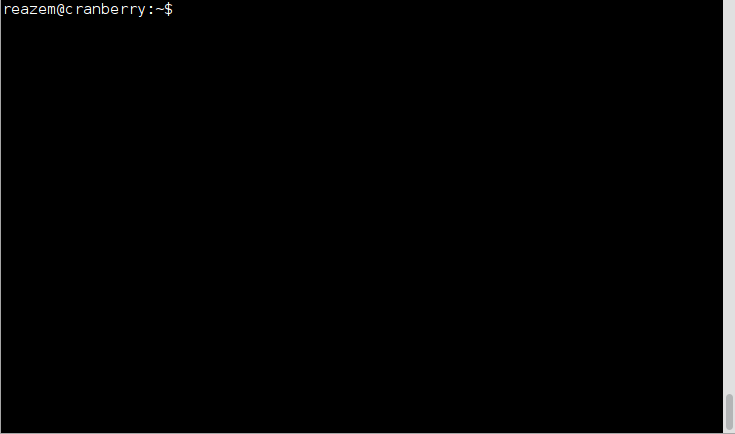
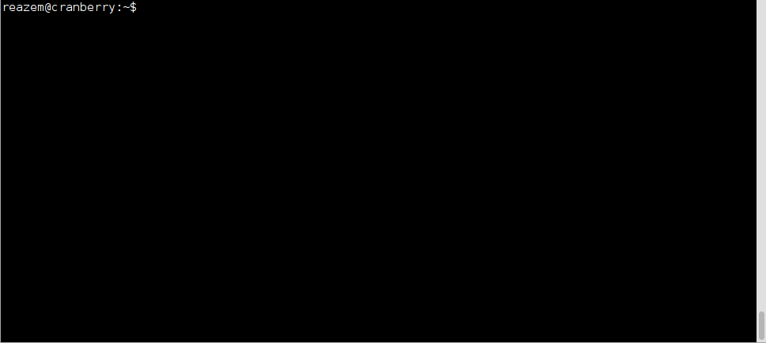

ByAlexandre Viau / @aviau
Surveil is a REST API for controlling a monitoring solution.
Creating hosts with the command-line interface
surveil config-host-create --host_name web1 --address 127.0.0.1 --use linux-system-nrpeAlso available:
surveil config-host-updatesurveil config-host-deletesurveil config-service-createsurveil config-service-updatesurveil config-service-delete
Display all monitored hosts 
Display the state of all monitored hosts 
Configuration of the monitoring trough Nova tags
nova boot --image ubuntu --flavor 1 --meta surveil_tags='linux-system-nrpe' machine_name